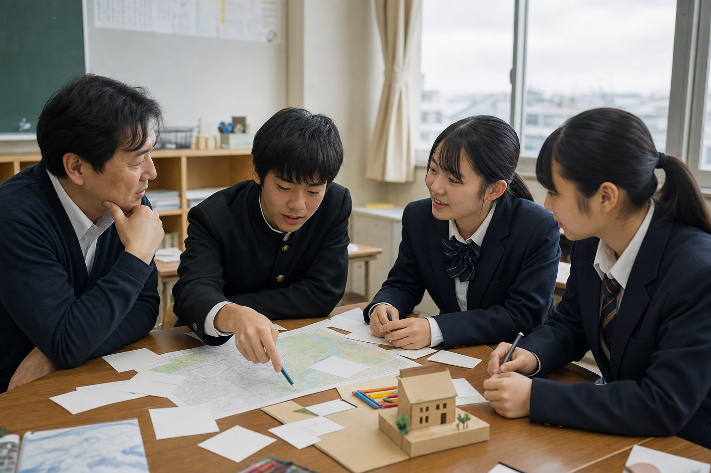

活用のヒント
目的別のさがし方
よく使われる入口へのショートカットです。
ご利用前のお願い
- 対象年齢・引率の要否・料金・申込方法は拠点により異なります。カードの対象表示と公式サイトをあわせてご確認ください
- 掲載内容は各拠点の公式情報をもとに整理していますが、最新でない場合があります。お申し込み前に公式サイト・各拠点へご確認ください
- 本サイトは各拠点の運営者ではありません。申し込み・キャンセル・当日の対応については、各拠点へ直接お問い合わせください
授業や行事でのご利用を検討される場合は、受け入れ可否・人数・時期について、事前に各拠点へご相談いただくことをおすすめします。
ご相談・掲載依頼
学校・団体でのご利用のご相談、掲載内容についてのお問い合わせ、新しい拠点の掲載依頼は、お問い合わせフォームからご連絡ください。